This is Lecture 1 of my Robot Perception, Cognition and Naviation course at Twente.
Almost every material gives the initial example of placing a robot in a foreign environment. Of course, to navigate the robot will need to localize itself; but how does it localize itself if it is not aware of what the surroundings are? That’s where the Simultaneous Localization and Mapping (SLAM) comes in strong.
Ok let’s get to it
Perception
Perception refers to the ability of a robot to sense and interpret its environment. It includes the use of sensors such as IMU, LiDAR, cameras, GNSS, etc.
Where is robot perception necessary?
- In “chaotic”/natural environments
- Not needed in structured, controlled environments.
Inertial Measurement Unit (IMU)
- Used it extensively in my Bachelor’s Thesis.
In the class it was defined as three accelerometers and three gyroscopes, which are perpendicular to each other.
- Acceleration and angular velocity measurements are used to estimate the position, the velocity and the attitude
- There are two types of IMUs:
- Gimbaled
- Strapdown
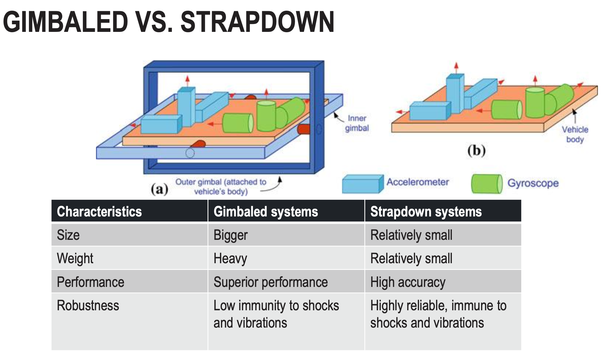
Accelerometer
The basic principle of many mechanical accelerometers is governed by a combination of Newton’s Laws and Hooke’s Law. A small mass attached to a spring deflects when the accelerometer is subjected to acceleration. The force exerted by the spring, according to Hooke’s Law () is what is measured and used to determine the acceleration

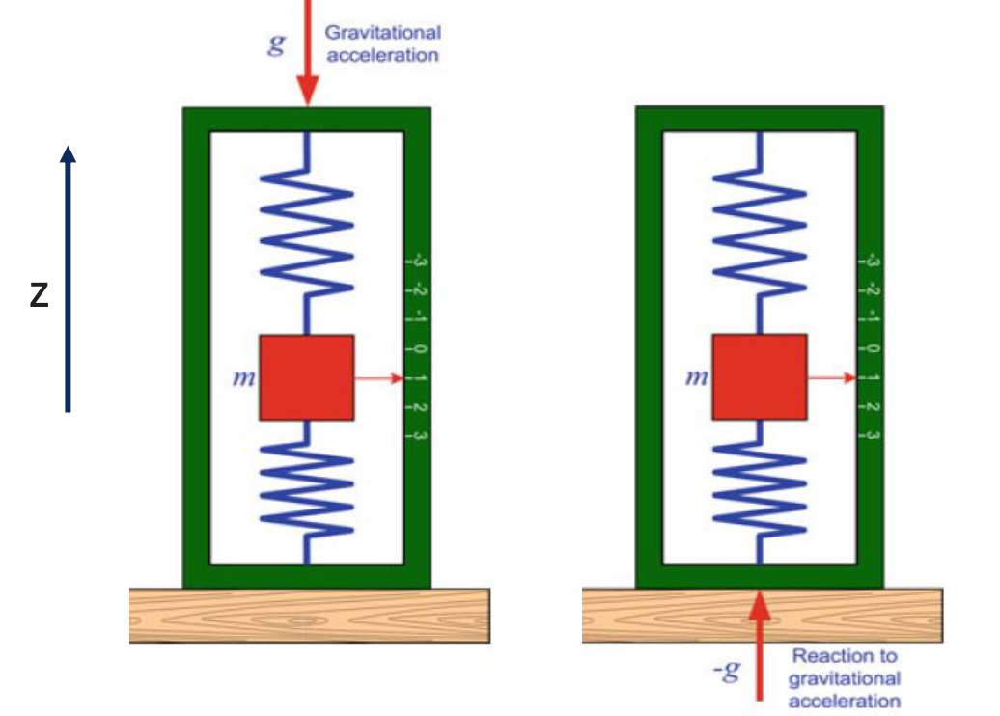
- Newton’s second law
- if we take gravity into consideration,
- But the measurement yields . This doesn’t mean that the accelerometer measures gravity; it measures the reaction to gravity, i.e. the specific force issued by the spring.
Gyroscope
The gyroscope spins with a high angular velocity . This spinning motion creates a significant angular momentum ,
- where is the moment of inertia of the gyroscope.
- When an external force or torque is applied (like a change in the orientation of the device it’s mounted on), this results in a measurable change in , which corresponds to the external influence.
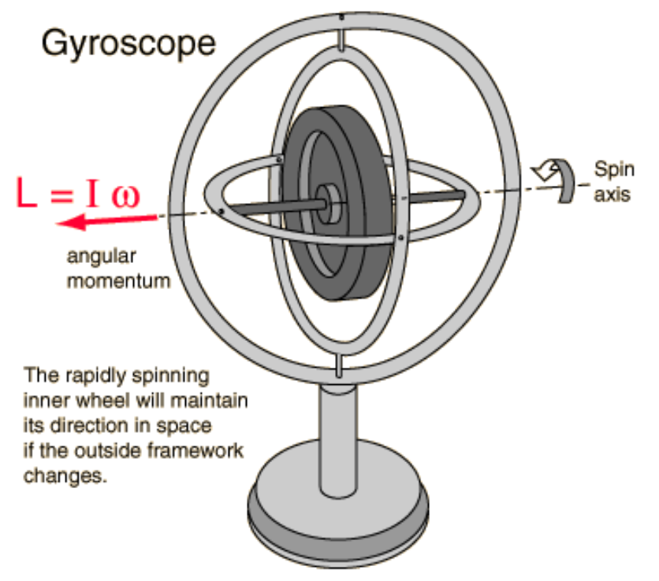
Some mathematical basics
when a torque is applied, it changes the angular momentum according to:
For a rotating gyroscope experiencing precession, the precession angular velocity can be derived by balancing the torque and the rate of change of angular momentum. This is given by:
A fast-spinning gyroscope strongly resists changes slow precession. A slow-spinning gyroscope has weak angular momentum falls quickly.
If I hold a spinning bicycle wheel that I hold by the axle and I try to tilt it sideways, the wheel doesn’t simply tilt — instead it rotates around in a circle. That’s precession: Instead of tipping over in the direction of the applied torque, the spinning object moves perpendicularly to that torque.
Basics
- From the formulas we can deduce that the higher the moment of inertia , the higher the angular momentum . Higher typically means more mass or larger dimensions. On the other hand, it increases stability and resistance to orientation changes.
- The same follows for every formula. Keep in mind which is inverse proportional and which is direct proportional.
Navigation
2D
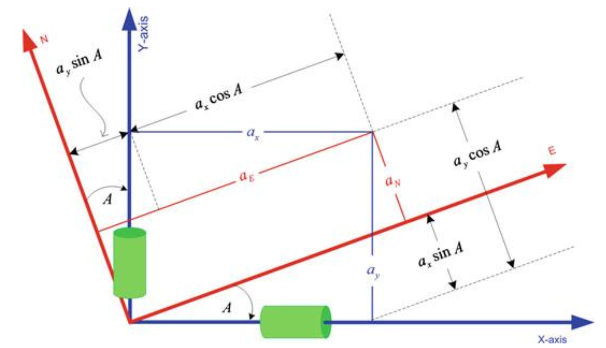
- The accelerometers measure accelerations in x and y directions. We can express these accelerations in N and E directions
- We can express this in a matrix form
By integrating these once and twice we get the velocity and position.
Azimuth angle:
is the initial angle.
3D
- Three accelerometers & three gyroscopes.
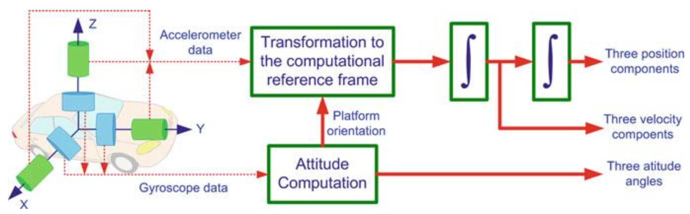
I explained how accelerations change if we apply rotation on multiple axis in Understanding rotational frames in 3D
IMU Errors
| **Systematic Errors** | **Random Errors** |
|---|---|
| 1. Bias offset | 1. Run to run bias offset |
| 2. Scale factor error | 2. Bias drift |
| 3. Non-linearity | 3. Scale factor instability |
| 4. Scale factor sign asymmetry | 4. White noise |
| 5. Dead zone | |
| 6. Quantization error | |
| 7. Non-orthogonality error | |
| 8. Misalignment error | |Systematic Errors
Bias Offset
- The bias of an accelerometer is the offset of its output signal from the actual acceleration value. A constant bias error causes an error in position which grows with time. It is possible to estimate the bias by measuring the long term average of the accelerometer’s output when it is not undergoing any acceleration.
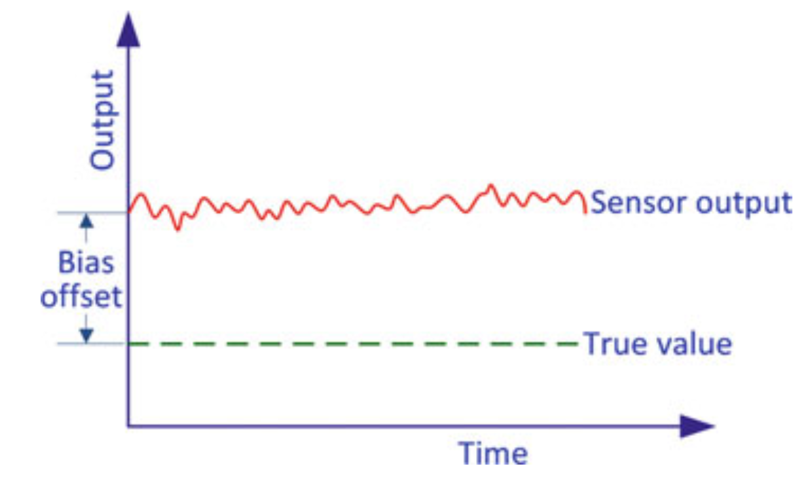
Scale Factor Error
- A scale factor error is a deviation where the sensor’s output is proportionally incorrect to the actual input, meaning its sensitivity is off. For example, an accelerometer measuring gravity might report a value slightly different from due to this error, and this error can change with temperature or affect the sensor’s linearity.
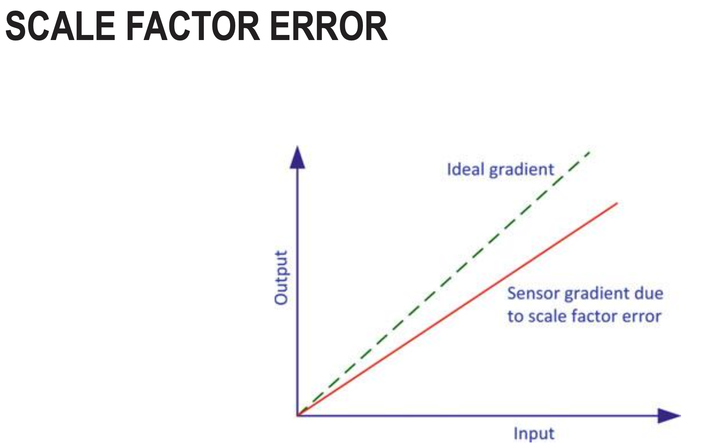
Non-Linearity
- Non-linearity refers to the deviation of the sensor’s output from an ideal linear relationship between the measured input and the actual output. This error can cause a sensor’s output to vary in a complex way that is not simply proportional to the input, and it is often expressed as a percentage of the full-scale range.
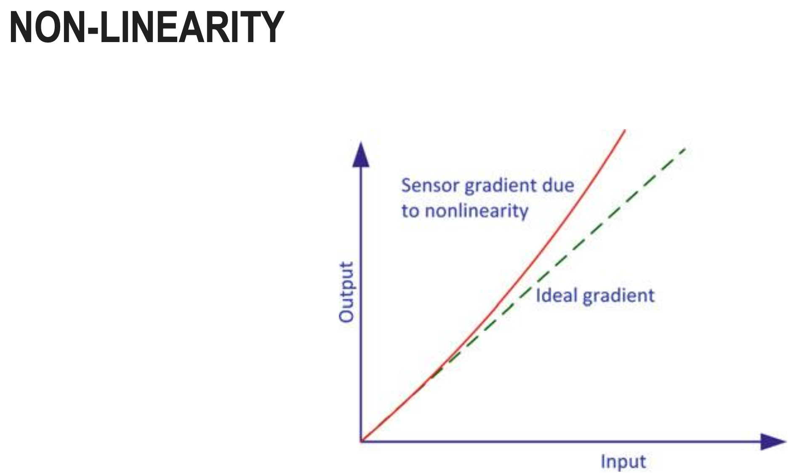
Scale Factor Sign Asymmetry
- Scale factor sign asymmetry is a systematic error where the ratio of output to input is different for positive and negative inputs, which can be exacerbated during IMU rotation and significantly impacts navigation accuracy. This error means the sensor is not perfectly linear and its scale factor (the multiplier on a signal) is not the same in both directions
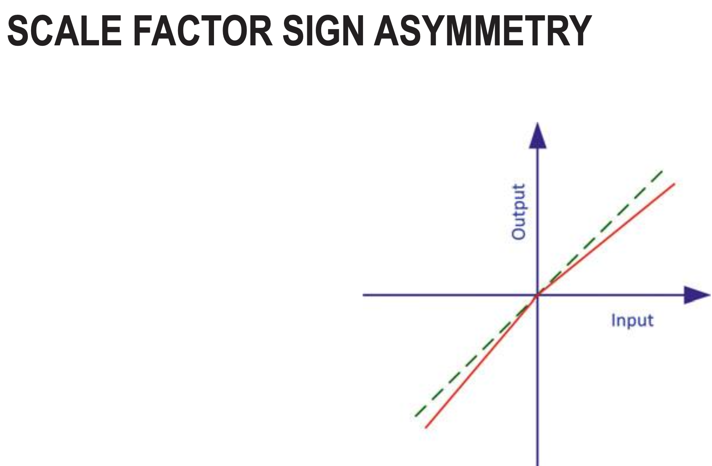
Dead Zone
- Dead zone is a range of input values where the IMU sensor doesn’t respond or produces zero output, even though there is actual motion or rotation. For example, if a gyroscope has a dead zone of ±0.5°/s, any angular velocity below 0.5°/s won’t be detected - the sensor will just output zero. This creates a systematic error where small movements are completely ignored. It’s common in low-cost IMUs and causes issues when trying to detect slow, gentle motions.
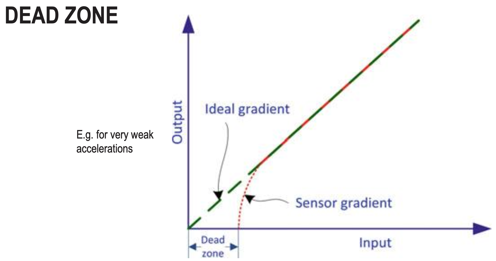
Quantization Error
- Quantization error occurs because IMUs convert continuous analog signals into discrete digital values. For example, if a gyroscope has 12-bit resolution over a ±250°/s range, it can only represent 4096 distinct values.
- The smallest step it can measure is: 250°/s ÷ 2048 ≈ 0.122°/s. Any actual angular velocity gets rounded to the nearest discrete value, creating an error of up to ±0.061°/s.
- This rounding error is the quantization error - inherent to any digital sensor with finite bit depth.
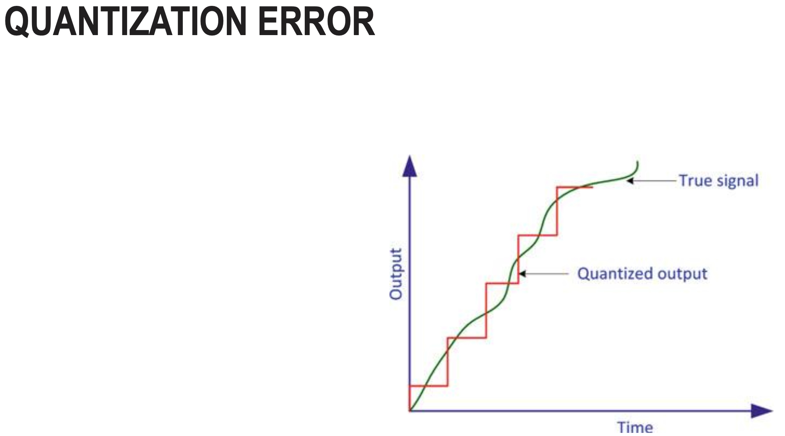
Non-Orthogonality
- Non-orthogonality error occurs when the IMU’s sensor axes are not perfectly perpendicular (90°) to each other due to manufacturing imperfections.
- Ideally, x, y, and z axes should be exactly orthogonal. In reality, they might be off by small angles (e.g., 89.8° instead of 90°).
- This causes cross-axis sensitivity - when you rotate around one axis, the sensor incorrectly reports some rotation on another axis too. For example, rotating purely around the x-axis might also show a small reading on the y-axis.
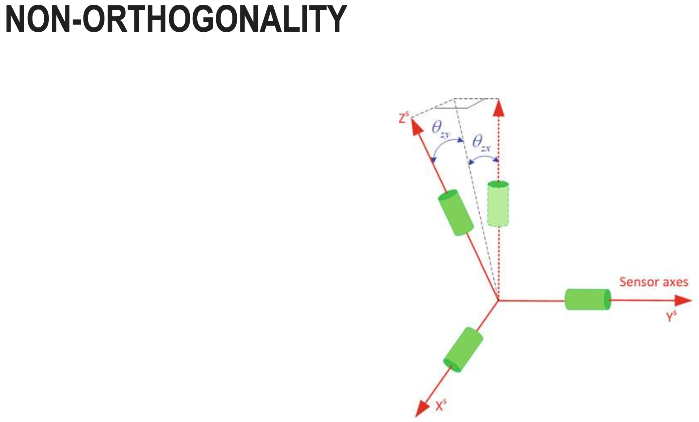
Misalignment
- Misalignment error occurs when the IMU’s sensor frame is not aligned with the body/vehicle frame it’s supposed to measure.
- For example, if you mount an IMU in a drone but it’s rotated by 2° from the drone’s actual x-y-z axes, all measurements will be off by that rotation. The IMU might report pitch when the drone is actually rolling.
- This is different from non-orthogonality (which is internal sensor axis misalignment). Misalignment is about how the entire IMU package is mounted relative to the platform.
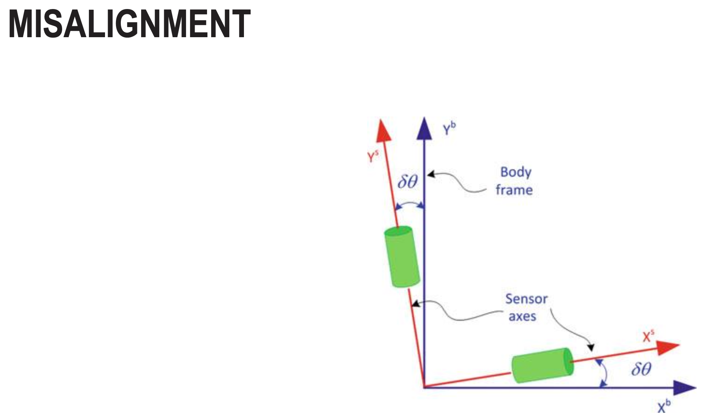
Random Errors
Run to Run Bias Offset
- Run to run bias offset is the variation in the bias (zero-point error) between different power cycles or startup sessions of the IMU. Each time you turn the IMU on, the bias offset is slightly different.
- This is a random error because it’s unpredictable and changes each time.
White Noise
- White noise is random, high-frequency noise present in IMU measurements with equal power across all frequencies.
- White noise is characterized by its standard deviation (noise density) and is typically reduced through filtering (low-pass filters, Kalman filters) rather than calibration, since it’s truly random and unpredictable.
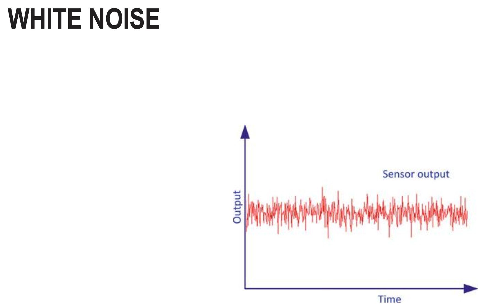
Bias Drift
- Bias drift is the slow, gradual change in the IMU’s bias over time during operation. Unlike run-to-run bias (which changes between power cycles), bias drift happens while the IMU is running. For example, a gyroscope might start with a bias of +0.5°/s, but after 10 minutes it drifts to +0.7°/s, then to +0.9°/s after an hour.
Scale Factor instability
- Scale factor instability is the random variation in the IMU’s scale factor (gain/sensitivity) over time or between measurements.
Angular Rate Errors
- Angular rate errors are inaccuracies in the gyroscope’s measurement of angular velocity (rotation rate). These errors include all the systematic and random errors we discussed, but specifically affect the gyroscope readings.
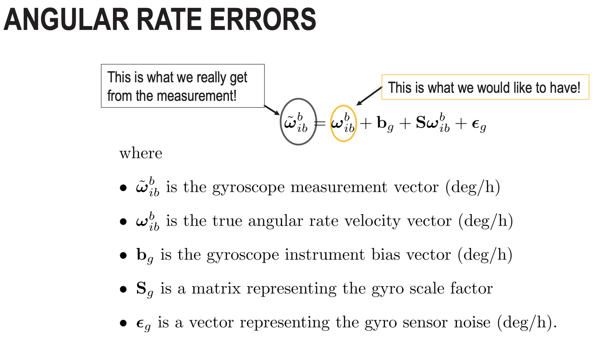
Accelerometer Errors
- Similar to Angular Rate Errors
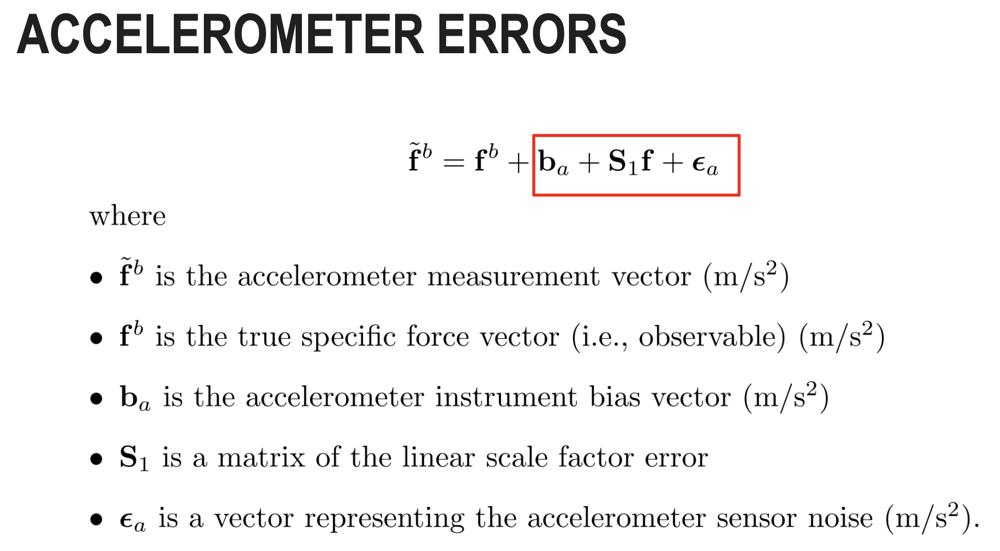
What type of errors can be calibrated away?
- Systematic errors can be calibrated away because they’re predictable and repeatable.
- Random errors are managed through filtering (Kalman filters, complementary filters) and sensor fusion. They are dependent on the quality of the IMU.
Pedestrian dead reckoning (PDR) uses accelerometers and gyroscopes to estimate speed and heading. What are the limitations of PDR?
- Error accumulation (drift) - Both accelerometer and gyroscope errors integrate over time, causing position estimates to drift unboundedly. Double integration of acceleration errors makes this especially severe.
- Bias drift - Gyroscope bias causes heading errors that accumulate, making the direction estimate increasingly wrong over time.
- No absolute reference - PDR only measures relative motion, with no way to correct accumulated errors without external references (GPS, landmarks, maps).
- PDR works reasonably for short distances/times but becomes increasingly unreliable without periodic corrections from other sensors.